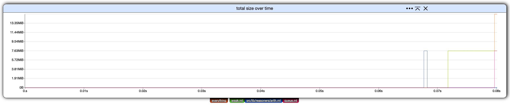
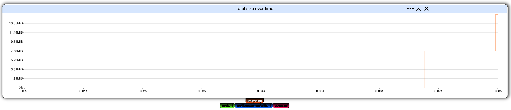
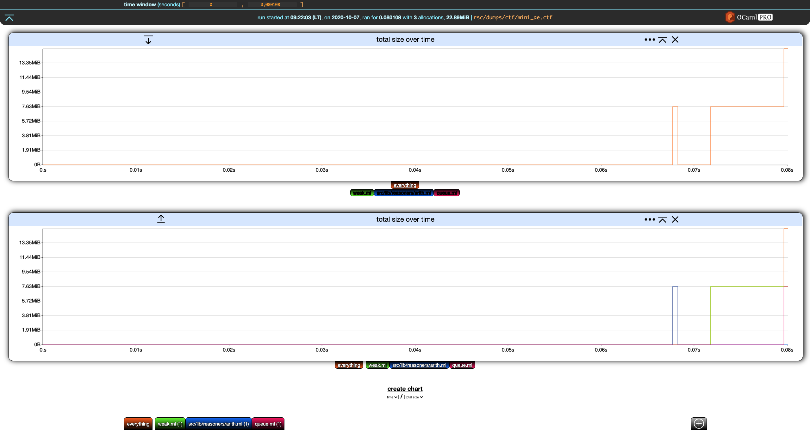
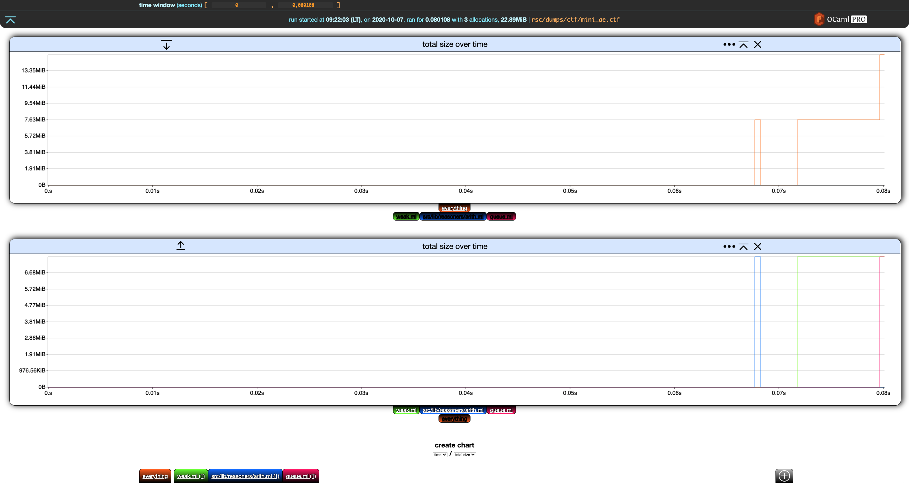
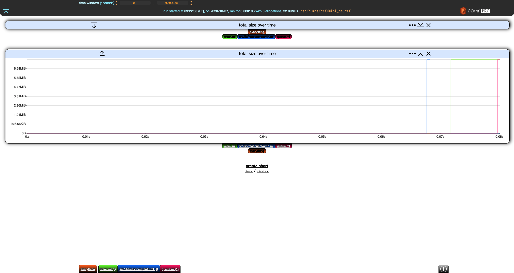
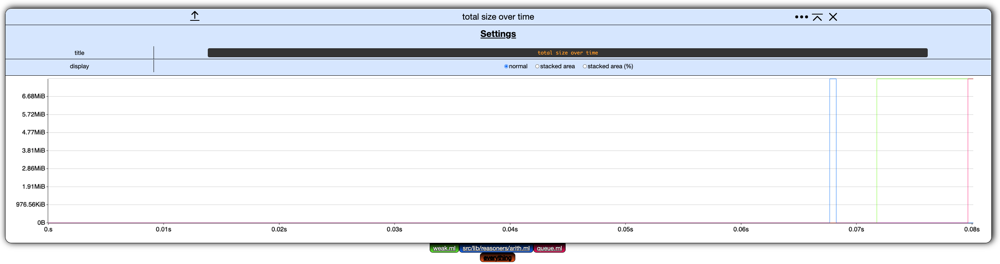
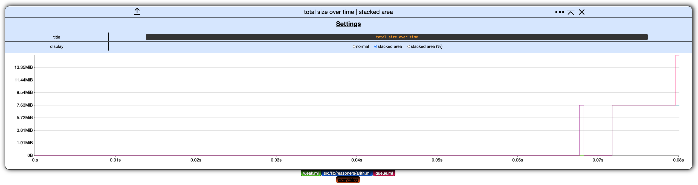

Charts
This section uses the same running example as the last section.
❯ memthol rsc/dumps/ctf/mini_ae.ctf
|===| Starting
| url: http://localhost:7878
| target: `rsc/dumps/ctf/mini_ae.ctf`
|===|
Filter Toggling
The first way to interact with a chart is to (de)activate filters. Each chart has its own filter tabs allowing to toggle filters on/off.
From the initial settings

click on all filters but everything to toggle them off.

Let's create a new chart. The only kind of chart that can be constructed currently is total size over time, so click on create chart below our current, lone chart.

Deactivate everything in the second chart.

Nice. We now have the overall total size over time in the first chart, and the details for each filter in the second one.
Next, notice that both charts have, on the left of their title, a down (first chart) and up (second chart) arrow. This moves the charts up and down.
On the right of the title, we have a settings ... buttons which is discussed
below. The next button collapses the chart. If we click on the collapse button
of the first chart, it collapses and the button turns into an expand button.

The last button in the chart header removes the chart.
Chart Settings
Clicking the settings ... button in the header of any chart display its settings. (Clicking on the
button again hides them.)

Currently, these chart settings only allow to rename the chart and change its display mode.
Display Mode
In memthol, a chart can be displayed in one of three ways:
-
normal, the one we used so far,
-
stacked area, where the values of each filter are displayed on top of each other, and
-
stacked area percent, same as stacked area but values are displayed as percents of the total.
Here is the second chart from our example displayed as stacked area for instance:
